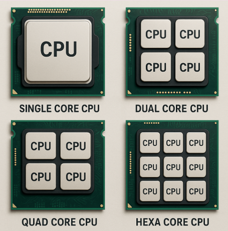

What is a CPU?
The CPU (Central Processing Unit) is the primary component of a computer that performs most of the processing inside a computer. It executes instructions from programs, performing basic arithmetic, logic, control, and input/output operations specified by the instructions.
Importance of CPU

The CPU is considered the brain of the computer because it carries out instructions necessary for all software to run. Its speed and efficiency directly affect the overall performance of the system. High-performance CPUs enable complex calculations, gaming, scientific simulations, and smooth multitasking.
Main Components of CPU

The CPU mainly consists of these key components:
- Arithmetic Logic Unit (ALU): Performs arithmetic operations (addition, subtraction, multiplication, division) and logical operations (AND, OR, NOT, XOR).
- Control Unit (CU): Directs all operations inside the CPU by fetching instructions from memory, interpreting them, and coordinating how data moves.
- Registers: Small, fast storage locations within the CPU that temporarily hold data and instructions during processing.
- Cache Memory: A small, fast memory area used to store frequently accessed data and instructions to speed up processing.
- Buses: Electrical pathways that transfer data between the CPU components and other parts of the computer.
How Does the CPU Work?

The CPU processes instructions through the following cycle called the Fetch-Decode-Execute Cycle:
- Fetch: The Control Unit fetches the instruction from the main memory (RAM).
- Decode: The instruction is decoded to understand what action is required.
- Execute: The ALU performs the operation (calculation, logic, or data movement).
- Store: The result is written back to registers or memory as needed.
This cycle repeats billions of times per second, enabling fast computation.
Types of CPUs
- Single-Core CPU: Contains one processing core to execute instructions sequentially.
- Multi-Core CPU: Contains multiple cores allowing parallel processing for better performance.
- Microprocessor vs Microcontroller: A microprocessor is designed just for general-purpose computing (like in PCs), while a microcontroller contains a CPU, memory, and I/O peripherals integrated, used in embedded systems.
- CISC vs RISC Architecture: Complex Instruction Set Computing (CISC) CPUs have many instructions that do multiple low-level operations. Reduced Instruction Set Computing (RISC) CPUs use fewer, simpler instructions for faster execution.
Functions of the CPU

- Process all data and instructions from programs and applications.
- Central control over the computer’s operations using the Control Unit.
- Perform arithmetic and logical calculations through the ALU.
- Manage data storage and transfer within the computer system via registers and buses.
- Coordinate communication between various hardware units.
CPU Types by Architecture
| Architecture | Description | Examples |
|---|---|---|
| x86/x64 CPUs | Commonly used in desktops, laptops, and servers. | Intel Core i3/i5/i7, AMD Ryzen series |
| ARM CPUs | Widely used in smartphones, tablets, and some laptops due to their power efficiency. | Apple M1, Qualcomm Snapdragon |
CPU Types by Core Count
| CPU Type | Description |
|---|---|
| Single-Core CPU | Contains one processing core; handles one task at a time. |
| Dual-Core CPU | Contains two cores, allowing multitasking and improved performance over single-core CPUs. |
| Quad-Core CPU | Four cores, suitable for multitasking and demanding applications like gaming. |
| Hexa-Core CPU | Six cores, offering better efficiency and speed for high-demand tasks. |
| Octa-Core and Multi-Core CPUs | Eight or more cores, designed for heavy multitasking, professional, and server use. |
CPU Types by Processor Type
| Processor Type | Description | Typical Use |
|---|---|---|
| Microprocessor | General-purpose CPU used in computers and laptops. | PCs, laptops |
| Microcontroller | Integrates CPU, memory, and peripherals. | Embedded systems, appliances |
| Embedded Processor | Designed for specific control applications within larger systems. | Automobiles, industrial machines |
| Digital Signal Processor (DSP) | Specialized for processing digital signals in audio, video, and communications. | Audio/video devices, telecom |
| Media Processor | Optimized for handling multimedia tasks. | Smart TVs, set-top boxes |
Specialized Processors
| Processor | Description | Typical Use |
|---|---|---|
| Graphics Processing Unit (GPU) | Handles graphics and parallel processing tasks. | Gaming, rendering, AI |
| Physics Processing Unit (PPU) | Dedicated to physics calculations in simulations and games. | Simulations, gaming |
CPU Types by Core Count (Summary Table)
| CPU Type | Number of Cores | Typical Use Case |
|---|---|---|
| Single-Core | 1 | Basic tasks, legacy systems |
| Dual-Core | 2 | Everyday multitasking |
| Quad-Core | 4 | Gaming, productivity |
| Hexa-Core | 6 | Advanced multitasking, gaming |
| Octa-Core+ | 8 or more | Workstations, servers |

This image shows a modern Intel Core i9 CPU, representing a high-performance, multi-core processor commonly found in desktops and workstations.
Additional Factors Affecting CPU Performance

- Clock Speed: Measured in GHz, it determines how many instruction cycles the CPU can perform per second.
- Cache Size: Larger cache helps reduce time to access frequently used data.
- Number of Cores: More cores can handle more simultaneous processes.
- Hyper-Threading & Multithreading: Techniques that allow more efficient core utilization by running multiple threads per core.
- Thermal Design Power (TDP): Heat generated affects CPU’s ability to sustain performance under load.
Frequently Asked Questions (FAQs)
- Q1. Why is the CPU called the "brain" of the computer? Because it controls all operations, processes data, and executes instructions, similar to how a brain controls body functions.
- Q2. What is the difference between RAM and CPU cache? RAM is main memory used for running programs, while cache is much faster, smaller memory inside or near the CPU used for frequently accessed data.
- Q3. What is the function of the Control Unit? The Control Unit fetches, decodes, and directs the execution of instructions, coordinating all CPU operations.
- Q4. What is the difference between CISC and RISC CPUs? CISC CPUs have many complex instructions; RISC CPUs use fewer, simpler instructions for faster execution.
- Q5. How does multi-core technology improve performance? Multiple cores allow parallel processing, so more tasks can be executed simultaneously, improving multitasking and speed.
- Q6. What is overclocking? Overclocking is running the CPU at a higher speed than its rated clock speed for better performance, but it can increase heat and risk.
- Q7. Why is CPU cooling important? Proper cooling prevents overheating, which can damage the CPU or reduce its performance and lifespan.